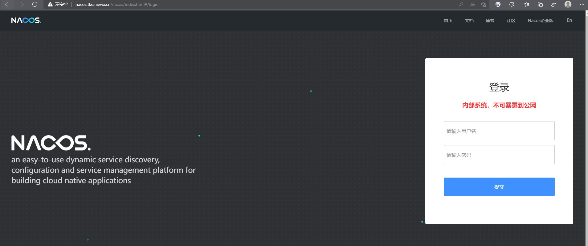
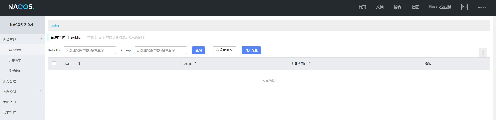

Nacos致力于帮助您发现、配置和管理微服务。Nacos提供了一组简单易用的特性集，帮助您快速实现动态服务发现、服务配置、服务元数据及流量管理。
Nacos帮助您更敏捷和容易地构建、交付和管理微服务平台。 Nacos是构建以“服务”为中心的现代应用架构 (例如微服务范式、云原生范式) 的服务基础设施。
下面我们来说下如何快速在k8s构建nacos，本次k8s集群是腾讯云的tke，支持云硬盘作为存储，如果是自建k8s，建议通过nfs作为持久化存储。
创建namespace部署nacos
创建一个namespace专门用来部署nacos。
1
| # kubectl create ns nacos
|
部署mysql服务
1
2
3
4
5
6
7
8
9
10
11
12
13
14
15
16
17
18
19
20
21
22
23
24
25
26
27
28
29
30
31
32
33
34
35
36
37
38
39
40
41
42
43
44
45
46
47
48
49
50
51
52
53
54
55
56
57
58
59
60
61
62
63
64
65
66
67
68
69
| apiVersion: apps/v1
kind: Deployment
metadata:
name: mysql
namespace: nacos
labels:
name: mysql
spec:
replicas: 1
selector:
matchLabels:
name: mysql
template:
metadata:
labels:
name: mysql
spec:
containers:
- name: mysql
image: nacos/nacos-mysql:5.7
args:
- --ignore-db-dir=lost+found
ports:
- containerPort: 3306
volumeMounts:
- name: mysql-data
mountPath: /var/lib/mysql
env:
- name: MYSQL_ROOT_PASSWORD
value: "root"
- name: MYSQL_DATABASE
value: "nacos_devtest"
- name: MYSQL_USER
value: "nacos"
- name: MYSQL_PASSWORD
value: "nacos"
volumes:
- name: mysql-data
persistentVolumeClaim:
claimName: mysql
---
apiVersion: v1
kind: PersistentVolumeClaim
metadata:
name: mysql
namespace: nacos
spec:
accessModes:
- ReadWriteOnce
resources:
requests:
storage: 10Gi
storageClassName: cbs
volumeMode: Filesystem
---
apiVersion: v1
kind: Service
metadata:
name: mysql
namespace: nacos
labels:
name: mysql
spec:
ports:
- port: 3306
targetPort: 3306
selector:
name: mysql
|
部署mysql可以会遇到一个错误，这里加上参数—ignore-db-dir=lost+found即可，具体说明参考文档https://cloud.tencent.com/developer/article/1559866
部署nacos
1
2
3
4
5
6
7
8
9
10
11
12
13
14
15
16
17
18
19
20
21
22
23
24
25
26
27
28
29
30
31
32
33
34
35
36
37
38
39
40
41
42
43
44
45
46
47
48
49
50
51
52
53
54
55
56
57
58
59
60
61
62
63
64
65
66
67
68
69
70
71
72
73
74
75
76
77
78
79
80
81
82
83
84
85
86
87
88
89
90
91
92
93
94
95
96
97
98
99
100
101
102
103
104
105
106
107
108
109
110
111
112
113
114
115
116
117
118
119
120
121
122
123
124
125
126
127
128
129
130
131
132
133
134
135
136
137
138
139
140
141
142
143
144
145
146
147
148
149
| ---
apiVersion: v1
kind: Service
metadata:
name: nacos-headless
namespace: nacos
labels:
app: nacos
annotations:
service.alpha.kubernetes.io/tolerate-unready-endpoints: "true"
spec:
ports:
- port: 8848
name: server
targetPort: 8848
- port: 9848
name: client-rpc
targetPort: 9848
- port: 9849
name: raft-rpc
targetPort: 9849
- port: 7848
name: old-raft-rpc
targetPort: 7848
clusterIP: None
selector:
app: nacos
---
apiVersion: v1
kind: ConfigMap
metadata:
name: nacos-cm
namespace: nacos
data:
mysql.db.name: "nacos_devtest"
mysql.port: "3306"
mysql.user: "nacos"
mysql.password: "nacos"
---
apiVersion: apps/v1
kind: StatefulSet
metadata:
name: nacos
namespace: nacos
spec:
serviceName: nacos-headless
replicas: 3
template:
metadata:
labels:
app: nacos
annotations:
pod.alpha.kubernetes.io/initialized: "true"
spec:
affinity:
podAntiAffinity:
requiredDuringSchedulingIgnoredDuringExecution:
- labelSelector:
matchExpressions:
- key: "app"
operator: In
values:
- nacos
topologyKey: "kubernetes.io/hostname"
initContainers:
- name: peer-finder-plugin-install
image: nacos/nacos-peer-finder-plugin:1.1
imagePullPolicy: Always
volumeMounts:
- mountPath: /home/nacos/plugins/peer-finder
name: data
subPath: peer-finder
containers:
- name: nacos
imagePullPolicy: Always
image: nacos/nacos-server:latest
resources:
requests:
memory: "2Gi"
cpu: "500m"
ports:
- containerPort: 8848
name: client-port
- containerPort: 9848
name: client-rpc
- containerPort: 9849
name: raft-rpc
- containerPort: 7848
name: old-raft-rpc
env:
- name: NACOS_REPLICAS
value: "3"
- name: SERVICE_NAME
value: "nacos-headless"
- name: DOMAIN_NAME
value: "cluster.local"
- name: POD_NAMESPACE
valueFrom:
fieldRef:
apiVersion: v1
fieldPath: metadata.namespace
- name: MYSQL_SERVICE_DB_NAME
valueFrom:
configMapKeyRef:
name: nacos-cm
key: mysql.db.name
- name: MYSQL_SERVICE_PORT
valueFrom:
configMapKeyRef:
name: nacos-cm
key: mysql.port
- name: MYSQL_SERVICE_USER
valueFrom:
configMapKeyRef:
name: nacos-cm
key: mysql.user
- name: MYSQL_SERVICE_PASSWORD
valueFrom:
configMapKeyRef:
name: nacos-cm
key: mysql.password
- name: NACOS_SERVER_PORT
value: "8848"
- name: NACOS_APPLICATION_PORT
value: "8848"
- name: PREFER_HOST_MODE
value: "hostname"
volumeMounts:
- name: data
mountPath: /home/nacos/plugins/peer-finder
subPath: peer-finder
- name: data
mountPath: /home/nacos/data
subPath: data
- name: data
mountPath: /home/nacos/logs
subPath: logs
volumeClaimTemplates:
- metadata:
name: data
spec:
accessModes: [ "ReadWriteOnce" ]
resources:
requests:
storage: 10Gi
selector:
matchLabels:
app: nacos
|
配置ingress访问ui页面
1
2
3
4
5
6
7
8
9
10
11
12
13
14
15
16
17
18
| apiVersion: networking.k8s.io/v1beta1
kind: Ingress
metadata:
annotations:
kubernetes.io/ingress.class: ingress
nginx.ingress.kubernetes.io/app-root: /nacos/index.html
name: nacos-ingress
namespace: nacos
spec:
rules:
- host: nacos.tke.niewx.cn
http:
paths:
- backend:
serviceName: nacos-headless
servicePort: 8848
path: /
pathType: ImplementationSpecific
|
nacos还提供了ui管理页面，这里用ingress转发到后端的8848端口即可，默认的登录账号密码是nacos/nacos，注意这里需要加上nginx.ingress.kubernetes.io/app-root: /nacos/index.html这个注解，因为nacos的index页面没在根目录下。


nacos使用示例
1
| curl -X PUT 'http://cluster-ip:8848/nacos/v1/ns/instance?serviceName=nacos.naming.serviceName&ip=20.18.7.10&port=8080'
|
1
| curl -X GET 'http://cluster-ip:8848/nacos/v1/ns/instance/list?serviceName=nacos.naming.serviceName'
|
1
| curl -X POST "http://cluster-ip:8848/nacos/v1/cs/configs?dataId=nacos.cfg.dataId&group=test&content=helloWorld"
|
1
| curl -X GET "http://cluster-ip:8848/nacos/v1/cs/configs?dataId=nacos.cfg.dataId&group=test"
|
operator部署nacos
上面我们是通过yaml一步步部署nacos，如果您觉得麻烦，也可以用operator来部署nacos。
这里就不部署了，可以参考文档https://github.com/nacos-group/nacos-k8s/blob/master/operator/README-CN.md
helm部署nacos
nacos也提供了helm的方式部署，可以参考文档https://github.com/nacos-group/nacos-k8s/tree/master/helm

欢迎访问 Vashon 的博客，博客和文章在完善中，请大家耐心等待。 若有问题或者有好的建议欢迎留言，笔者看到之后会及时回复。